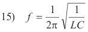

Website owner: James Miller
Electrical oscillations in an L-C circuit. Rectifiers. Reservoir capacitors. Electromagnetic radiation. Antennas. Radio broadcasting. Piezoelectric effect. Microphones. Speakers. Amplitude modulation. Frequency modulation. Crystal receiver.
Electrical oscillations in an L-C circuit. A circuit containing only a switch, charged capacitor, and inductor will exhibit oscillator behavior when the switch on the circuit is closed due to a mechanism of repeating discharge and recharge of the capacitor. Fig. 1 (a) shows a circuit containing a charged capacitor C, an inductor L of negligible resistance, and a switch S. We now consider the oscillatory behavior that occurs when the capacitor discharges on the closure of the switch: At the instant the switch is closed, the capacitor starts discharging through the inductor. As it discharges, a magnetic field builds up in the inductor and the stored-up energy of the capacitor is transferred to the inductor. When it has completely discharged, the potential difference between its terminals has decreased to zero. See Fig. 13 (b). The magnetic field of the inductor now starts decreasing, inducing an emf in the inductor in the same direction as the current. The current consequently persists, but with diminishing magnitude, until the magnetic field has disappeared and the capacitor has been charged in the opposite sense to its original polarity, as shown in Fig. 1 (c). The process now repeats itself in the opposite direction and in the absence of energy losses the charges on the capacitor will surge back and forth indefinitely.
Thus the charge flows back and forth between the plates of the capacitor, through the inductor. The energy oscillates back and forth between the capacitor and the inductor until (if not replenished by power from an external circuit) internal resistance causes the oscillations to die out in a process called damping. The action of the circuit is similar to that of a pendulum swinging back and forth, or water sloshing back and forth in a tank. It is for this reason that the circuit is sometimes called a tank circuit. The oscillation frequency is determined by the capacitance and inductance values. In typical tuned circuits in electronic equipment the oscillations are very fast, thousands to millions of times per second.
The frequency of the electrical oscillations is given by

This frequency is called the natural frequency of the L-C circuit.
The L-C circuit is an example of what is called a harmonic oscillator i.e. a vibratory system exhibiting simple harmonic motion.
Rectifiers. A rectifier is an electrical device that allows current to flow in one direction but not in the other. They include vacuum tube diodes, mercury-arc valves, ignitrons, copper and selenium oxide rectifiers, semiconductor diodes, silicon-controlled rectifiers and other silicon-based semiconductor switches.
Fig. 2(a) shows a circuit commonly used to perform a half-wave rectification where T is a transformer and D is a diode. The input wave is shown in Fig. 2(b) and the output wave that appears in load L is shown in Fig. 2(c).
Fig. 3(a) shows a circuit that performs a full-wave rectification that employs a center tap transformer T and two diodes with the output wave that appears in load L shown in Fig. 3(c).
Smoothing the pulsating DC from an AC rectifier. Many applications require a steady DC current such as is produced by a battery. A capacitor called a reservoir capacitor is used to smooth the pulsating output from a rectifier. The circuit of Fig. 4(a) illustrates the use of a reservoir capacitor to smooth the output of the diode rectifier. The input is AC current, the diode rectifies it, and the capacitor smooths it. As the rectifier voltage increases, it charges the capacitor and also supplies current to the load. At the end of the quarter cycle, the capacitor is charged to its peak value. After this, the rectifier voltage starts to decrease and this initiates the discharge of the capacitor through the load.
The red lines in Fig. 5(b) shows the smoothing effect of the
reservoir capacitor.
Electromagnetic radiation. What is electromagnetic radiation? How is it produced? Consider this: First, we know that an electric charge (positive or negative) has an electric field around it that extends indefinitely out into space. Second, we know that if the charge moves, it then also has a magnetic field around it that extends indefinitely out into space. Thus a moving charge has both a electric and magnetic field around it. Now suppose the charge vibrates to-and-fro in a simple harmonic type of motion. What happens? As it vibrates, its electric field vibrates with it in harmonic fashion. In addition, because of its constantly changing velocity, its magnetic field, whose strength depends on velocity, also changes in harmonic fashion. It thus generates two harmonically oscillating fields — one a harmonically oscillating electric field and the other a harmonically oscillating magnetic field — both propagating out into space in much the same way as sound propagates out into space from a sound source. These two harmonically oscillating fields propagating out into space constitute electromagnetic radiation.
A picture of the electric field and magnetic field components of an electromagnetic wave is shown in Fig. 5.
Electromagnetic spectrum. The electromagnetic spectrum is the range of all possible frequencies of electromagnetic radiation. Fig. 5 shows a diagram of the electromagnetic spectrum for frequencies expressed in Hertz (Hz).
Def. Hertz. A unit of frequency equal to one cycle per second.
Examination of the electromagnetic spectrum in Fig. 6 shows a number of different types of waves: radio waves, microwaves, infra-red waves, light waves, X-rays, Gamma rays, etc.
Light waves are usually generated by substances heated to incandescence, X-rays are produced by directing a stream of high energy electrons against a metal plate inside a vacuum tube, Gamma rays are produced in the decay of radium and other radioactive substances. How are radio waves produced? Radio waves are produced by rapidly vibrating charge in an antenna, or more precisely, a high frequency alternating current moving back and forth in an antenna.
Antennas and broadcasting. The most common type of antenna is the half-wave dipole antenna shown in Fig. 7 (a). It is a conductor with two arms of equal length with each
arm equal to one quarter of the wavelength being transmitted. Each arm is connected to an output terminal of a radio frequency (r.f.) generator. See Fig. 7 (b). For an antenna to operate properly, it must be of such length that standing waves will be formed that flow back and forth between the ends of the antenna. Most of the energy is reflected at the ends but some is radiated out into space, a phenomenon analogous to the behavior of standing sound waves in an organ pipe with most being reflected, but some radiated. In broadcasting, the antennas are usually oriented in a vertical position. The electromagnetic field generated by a vertically oriented half-wave dipole antenna is shown in Fig. 8. Along the x and z axes the electric and magnetic fields follow the form of Fig. 5 above.
Piezoelectric effect. When certain substances (crystals, such as Rochelle salt and quartz; certain ceramics; and biological material such as bone) are subjected to a mechanical stress (as in distorting, twisting, compressing, etc.) the opposite surfaces become electrically charged, the potential difference generated between the sides being proportional to the amount of stress applied. If the two sides are connected by a wire, current will flow. This is known as the Piezoelectric effect. The crystal with its supporting apparatus is called a piezoelectric cell.
Crystal microphones use the piezoelectric effect to transform the varying pressure of sound waves into an electric current that varies as the pressure of the sound wave.
The piezoelectric effect also works in reverse: the crystal experiences a mechanical strain when subjected to a difference in electrical potential. An alternating voltage placed across the crystal will cause a mechanical vibration proportional to the varying voltage.
Crystal headphones use this reverse piezoelectric effect to transform varying voltages into mechanical vibrations.
Microphones. Microphones change sound waves into the electrical equivalent of sound — which is an alternating current known as the audio signal. There are a number of ways this can be done and so there are microphones that work through different principles. The crystal microphone utilizes the piezoelectric effect. The carbon microphone works on fact that when carbon granules are compressed to a greater or lesser degree by a diaphragm, their resistance varies with the acoustic pressure, thus producing corresponding fluctuations in current. In the condenser microphone the diaphragm acts as one plate of a capacitor, and the vibrations produce changes in the distances between the plates, causing the capacitor capacity to vary. In the moving coil microphone a small movable induction coil, positioned in the magnetic field of a permanent magnet, is attached to the diaphragm. When the diaphragm vibrates, the coil moves in the magnetic field producing a varying current in the coil through electromagnetic induction.
Speakers and headphones. Speakers and most headphones operate the same way. The difference is size. Fig. 9 shows a diagram of a dynamic loudspeaker. Its construction is the same as that of the moving coil microphone just described. A small coil attached to the cone-shaped diaphragm of the speaker vibrates inside either a permanent magnet or an electromagnet that is energized with direct current. When current flows in the small coil (called the voice coil), it becomes a variable electromagnet interacting with the larger magnet. When the current in the voice coil changes direction, its polar orientation reverses. This changes the magnetic forces between the voice coil and larger magnet, moving the coil and attached diaphragm back and forth. When the coil moves, it pushes and pulls on the speaker cone. This vibrates the air in front of the speaker, creating sound waves. The frequency and amplitude of the audio signal dictates the rate and distance that the voice coil moves. This, in turn, determines the frequency and amplitude of the sound waves produced by the diaphragm.
AM and FM broadcasting. The frequency range of audible sound is 20 - 20,000 cycles per second. Consequently, the frequency range of the electrical audio signal that is output by a microphone is 20 - 20,000 cycles per second. Now 20,000 cycles per second corresponds to a wavelength of 15,000 m (λ = c/f = 3∙108 / 2∙104 = 15,000). Broadcasting radiation of this wavelength would require a dipole antenna that was 7,500 meters long which is not practical. In
addition, an antenna will broadcast a signal of a particular wavelength, not a band of wavelengths. Thus we cannot just feed the audio signal into an antenna and broadcast it. So how does one broadcast the audio signal? The answer to this problem was found in superimposing the audio signal on top of a high frequency signal (called the carrier wave, or carrier signal) that one can broadcast. The audio signal thus rides on the carrier signal and is then extracted from the carrier signal at the receiving end by the circuitry in the radio.
There are two methods of putting the audio signal on the carrier wave. One method is called amplitude modulation (AM) and the other method is called frequency modulation (FM).
Amplitude modulation. In amplitude modulation, when the audio signal is placed on the carrier signal, the amplitude of the carrier signal is changed but its frequency remains unchanged. Fig. 10 (a) shows an unmodulated carrier signal, Fig. 10 (b) shows an audio signal, and Fig. 10 (c) shows the amplitude modulated carrier signal.
Frequency modulation. In frequency modulation, when the audio signal is placed on the carrier signal, the amplitude of the carrier signal is unchanged but its frequency varies in accordance with the changes in the amplitude of the audio signal. 10 (c) shows the frequency modulated carrier signal for the carrier signal of Fig. 10 (a) and the audio signal of Fig. 10 (b).
The standard AM broadcasting band extends from 540 kHz to 1,600 kHz. The FM band extends from 88 MHz to 108 MHz.
The making and broadcasting of a radio program. Let us consider the steps involved in the making and broadcasting of a radio program. The program is recorded with a microphone in a studio. See Fig. 11. The audio signals from the microphone are weak and need to be amplified thousands of times before they can be transmitted via wire to the transmitter building. This amplification is done in the control room next to the studio with an audio amplifier. The strengthened audio signal is then transmitted by wire to the transmitter building. At the transmitter building the audio signal is amplified some more and then combined with the carrier signal. The frequency of the carrier signal is one that has been assigned to the station by Federal Communications Commission. The modulated signal is then sent to the transmitting tower where it is broadcast.
Radio wave propagation. Part of the radio wave propagated out from the transmission antenna travels parallel to the ground. This part of the wave is called the ground wave. The other part of the wave travels upward toward the sky and is called the sky wave.
The ground wave. The ground wave gets weaker, the further one gets from the station. The higher the power of the station, the further away its signal can be picked up. However, 50 miles is about the limit for good reception for an AM station.
The sky wave. In the daytime most AM sky waves keep going on up into space as shown by the route from A to B in Fig. 12. However at night, AM sky waves, under the right conditions, may get bent and reflected back down to earth by an ionized layer of particles ( the ionosphere) somewhere between 50 and 200 miles up as shown in Fig. 12. The waves may then be reflected back up to the sky and then reflected down again. A wave may be reflected between earth and sky in this way several times before its energy dies out, allowing the wave to travel halfway around the earth or further. Consequently, the reception of a particular station will be good in those areas where the wave is hitting the earth, but poor in between these points. The distance between the points of good reception is called the skip distance. Since the ionospheric layers move up and down from hour to hour, the skip distance also changes from hour to hour.
FM sky waves, being of much higher frequency, are rarely reflected by the ionosphere, but instead pass through it out into space.
Def. Detector. A tube or crystal which separates the audio signal from an amplitude-modulated carrier signal.
Crystal receiver. A circuit diagram of a crystal receiver, a type of receiver used in the early days of radio, is shown in Fig. 13. The variable capacitor C1 is used to tune to a desired frequency. The crystal detector rectifies the modulated carrier signal and the reservoir capacitor C2 smooths the pulsating rectifier output giving an approximation to the original audio signal. This smoothed output signal operates the ear phones.
References
1. Sears, Zemansky. University Physics
2. Semat, Katz. Physics.
3. Dull, Metcalfe, Brooks. Modern Physics.
Jesus Christ and His Teachings
Way of enlightenment, wisdom, and understanding
America, a corrupt, depraved, shameless country
On integrity and the lack of it
The test of a person's Christianity is what he is
Ninety five percent of the problems that most people have come from personal foolishness
Liberalism, socialism and the modern welfare state
The desire to harm, a motivation for conduct
On Self-sufficient Country Living, Homesteading
Topically Arranged Proverbs, Precepts, Quotations. Common Sayings. Poor Richard's Almanac.
Theory on the Formation of Character
People are like radio tuners --- they pick out and listen to one wavelength and ignore the rest
Cause of Character Traits --- According to Aristotle
We are what we eat --- living under the discipline of a diet
Avoiding problems and trouble in life
Role of habit in formation of character
Personal attributes of the true Christian
What determines a person's character?
Love of God and love of virtue are closely united
Intellectual disparities among people and the power in good habits
Tools of Satan. Tactics and Tricks used by the Devil.
The Natural Way -- The Unnatural Way
Wisdom, Reason and Virtue are closely related
Knowledge is one thing, wisdom is another
My views on Christianity in America
The most important thing in life is understanding
We are all examples --- for good or for bad
Television --- spiritual poison
The Prime Mover that decides "What We Are"
Where do our outlooks, attitudes and values come from?
Sin is serious business. The punishment for it is real. Hell is real.
Self-imposed discipline and regimentation
Achieving happiness in life --- a matter of the right strategies
Self-control, self-restraint, self-discipline basic to so much in life